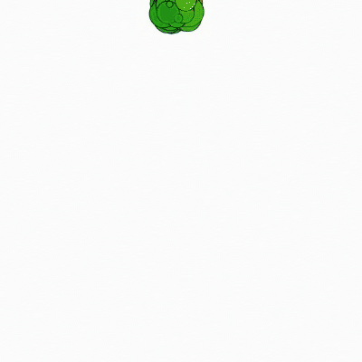
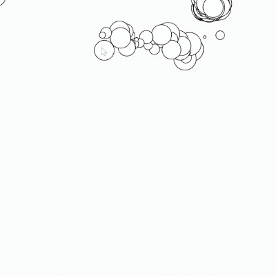
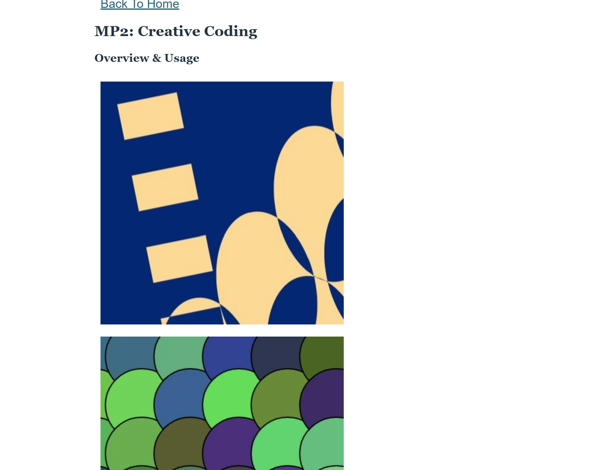
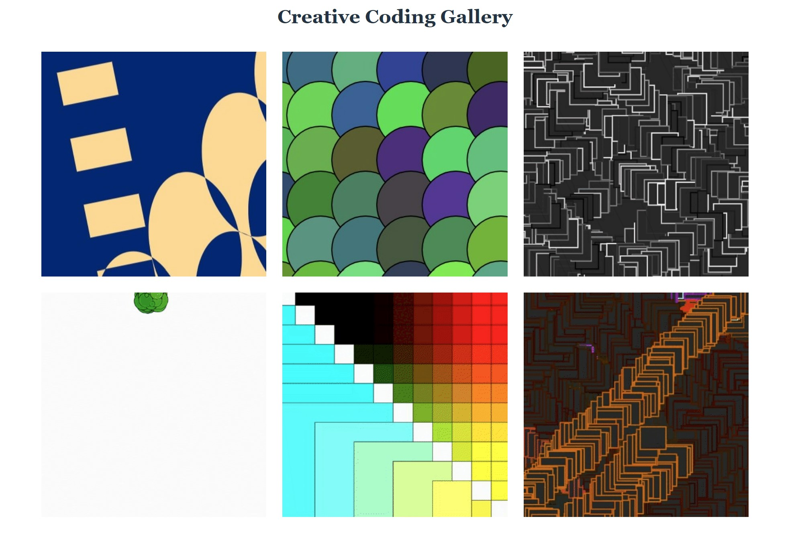

This project includes six sketches made with p5js. Each sketch builds on the complexity of the previous sketch by adding a new element.
The sketches are:
These sketches can be explored through the gallery page.
The code for these pages can be explored in the GitHub repository.
My process for each sketch of this project was to explore existing examples of p5js sketches, then play around with the tools and functions to create something new. It was ultimately loads of fun to see what others made and then try making something cool myself. Instead of building sketches on previous ones, I started each with a blank page to try to explore different ideas and methods. It wasn't until the very last sketch that I adapted my earlier infinitely looping sketch to make an audio-visual screensaver. I didn't run into much trouble while programming the sketches; it was just hours of creative exploration.
Once all of my sketches were made, I programmed the gallery web page to display them. It was easy enough to make a barebones page linked to the sketches, but I ran into more trouble formatting the preview gifs into a nice grid.
My biggest issue during this project was just getting the CSS flexbox to work the way I wanted. I originally had a syntax error where a missing semicolon broke my CSS rules, along with a logic error where I was setting some CSS styles for the grid blocks rather than the wrapping container. I identified and fixed these errors with some help from the class slides and this CSS guide, but it still didn't appear to be working. It turned out that my body container had a max-width property that was set too narrow for a two-column grid. I ultimately spent an embarassing amount of time trying to figure out what was wrong, but I feel a lot more comfortable using the CSS flexbox after fixing these issues.
The gallery page now has a nice grid display, and it's even responsive for smaller screen sizes:
